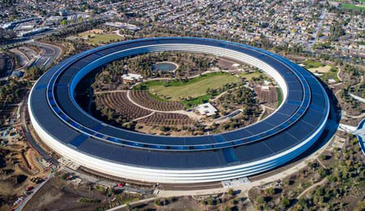
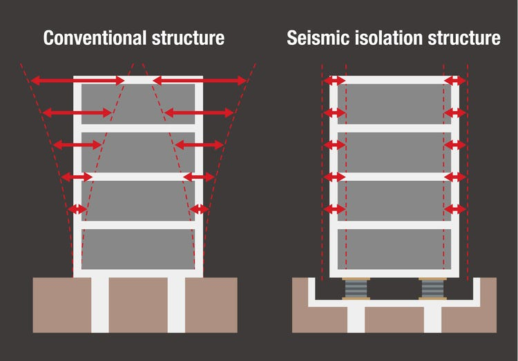
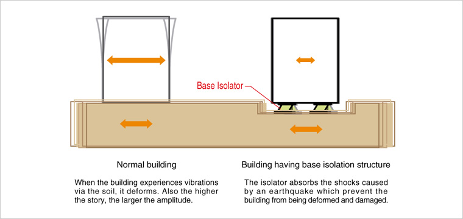

BASE ISOLATION TECHNOLOGY
BY- SATYAM RAJPUT
Base isolation is one of the most powerful tools of earthquake engineering pertaining to the passive structural vibration control technologies. The isolation can be obtained by the use of various techniques like rubber bearings, friction bearings, ball bearings, spring systems and other means.
Apple Park , the corporate office of Apple Inc. located at One Apple Park Way in Cupertino , California is truly a modern marvel. It houses more than 12,000 employees in one central four-story circular building of approximately 2,800,000 square feet. The main building is designed in such a way that it is often referred to as a “SPACESHIP”.
The total cost of this astonishing human creation was estimated to be closer to a whooping $5 billion . One of the main reasons behind the copious amount being required in this is structure is the use of BASE ISOLATION TECHNOLOGY. So basically 700 steel plate saucers are being used in designing the base of that building that literally allow it not to attach it to the face of the earth. Each steel plate is 7 ft. in diameter and weighs about 15,000 lbs. The isolators were designed fir low friction according to lead structural engineer, John Worley.

In the United States, the Apple building is one of only around 175 buildings that use
the technology. The specific base-isolation system that Apple uses was designed and
manufactured a short drive way on the other side of the San Francisco Bay at a company
called Earthquake Protection Systems.
Base Isolation Technology Significantly Increases Safety against Earth-quakes. The
amplitude of seismic vibrations is reduced to one-half to one-fifth. The whole building is
isolated from the ground, so all the floors from the first to the top have the same level of
safety. With earthquakes exerting tensile forces on buildings, buildings that have many
stories or irregular shapes may not be suitable for base isolation.

If recent numbers are
taken into
consideration then
Earthquakes (including tsunamis) killed more people than all other types of disaster put
together, claiming nearly 750,000 lives between 1994 and 2013. So, if we somehow manage
to make this technology more cost efficient then it would be one of the greatest things to
happen to humankind.